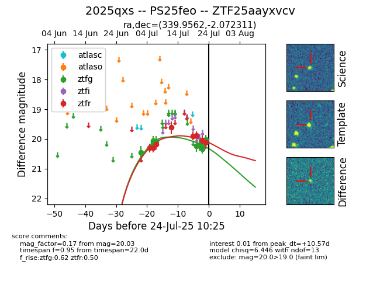

Target 2025qxs at 2025-07-24 10:25, see:
FINK: fink-portal.org/2025qxs
Lasair: lasair-ztf.lsst.ac.uk/objects/2025qxs
ALeRCE: alerce.online/object/2025qxs
TNS: wis-tns.org/object/2025qxs
YSE: ziggy.ucolick.org/yse/transient_detail/2025qxs
alt names
ZTF25aayxvcv (ztf,fink)
2025qxs (tns,yse)
PS25feo (panstarrs)
coordinates:
equatorial (ra, dec) = (339.9562,-2.07231)
galactic (l, b) = (65.7730,-49.74923)
photometry
last ztfg=20.03, ztfr=20.13
9 ztfg, 9 ztfr detections
